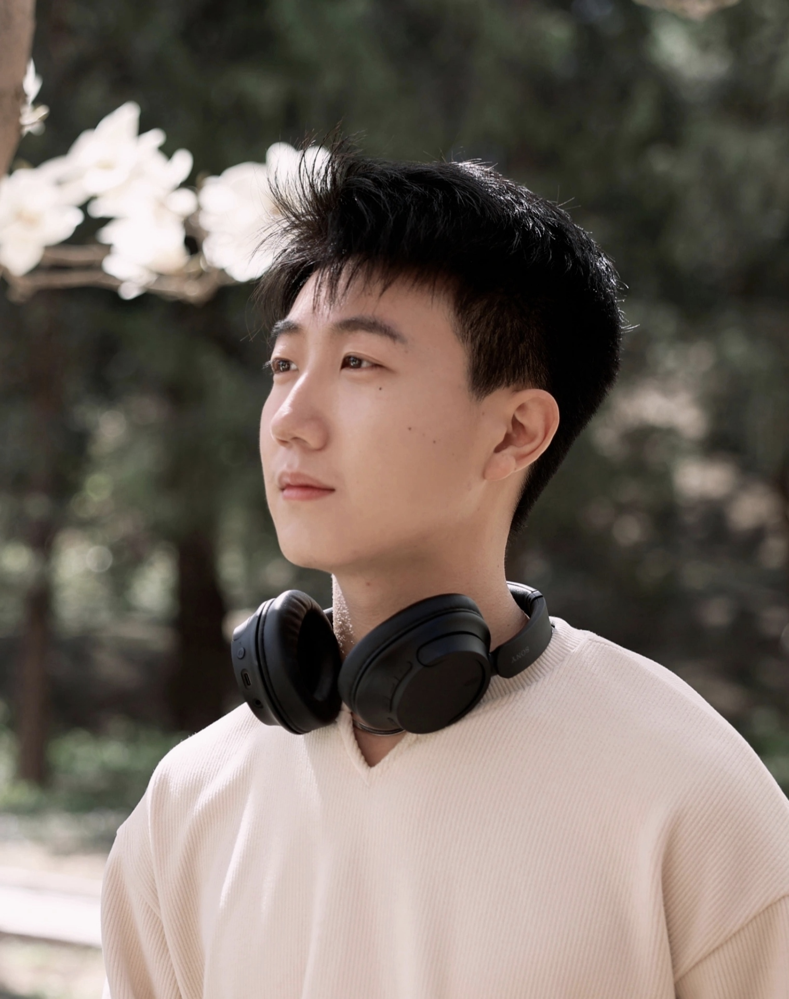
CREATOR_01
AIGC 讲师
01 / 02
马琪芮
清华大学建筑学博士
01 / 曾任清华大学 AIGC 本科生小学期助教。
02 / 参与《令人心动的 offer 4》《岛屿少年》《开始捉迷藏 2》《一站到底》等综艺录制。
03 / 现从事自媒体与自有品牌创业，全网粉丝 250,000+。
用一句话，说说你心里的 AI。
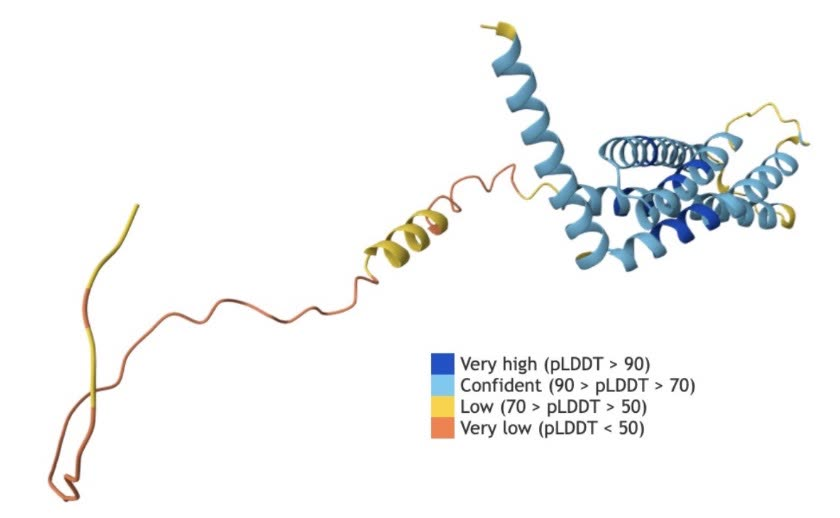
精准预测蛋白质结构，攻克困扰生物学界半个世纪的难题
4.5 小时内解出 6 道题中的 5 道，成绩经大赛官方认证

国产开源推理模型发布一周，登上中美 App Store 免费榜首位
位居国内 AI 应用第一，“买前问豆包”成为新的购物入口
《逆水寒》《燕云十六声》中，玩家可与 NPC 自由交谈


82 岁老人第一次“见到”1953 年牺牲于朝鲜战场的父亲
来源：诺贝尔奖官网 · Google DeepMind · QuestMobile 2026.06 · 网易 · 福建日报 2026.04.15。图：AlphaFold 结构图（Wikimedia, CC0）· 福建省退役军人事务厅 · 游戏对话为示意
拍照识别食物热量的 AI 应用，两年下载量超 1500 万，年收入超 3000 万美元，2026 年被 MyFitnessPal 收购
三位高中时期的辩论队友创办的 AI 招聘平台，2025 年估值 100 亿美元，三人 22 岁成为全球最年轻的白手起家亿万富翁
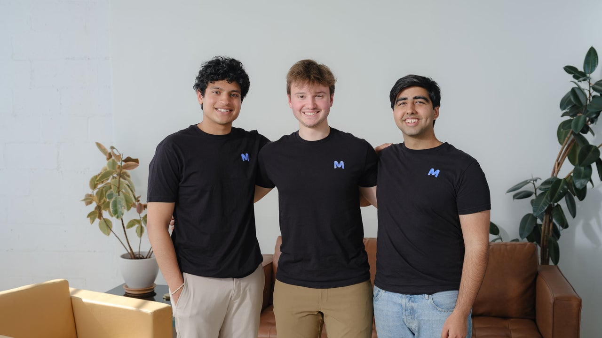
开发 AI 创业辅助工具 ClawFounder，在中关村北纬龙虾大赛中夺冠，获奖金 20 万元
4.6 万名中小学生报名，856 名选手进入上海决赛；比赛设置人工智能基础知识、工具应用、驱动科学、具身智能与大语言模型应用五大赛道
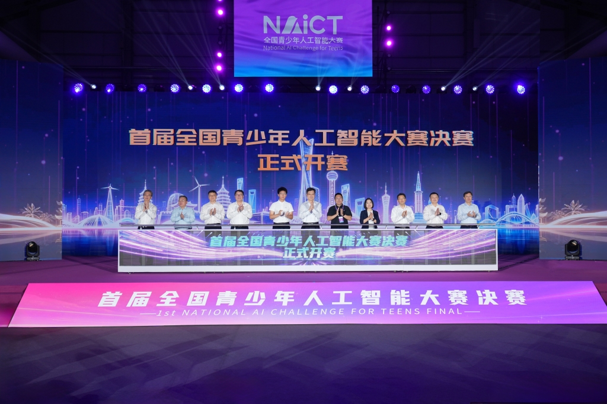
Q1当 AI 能够写作、绘画与拍摄，人的不可替代性在哪里？
Q2未来十年，哪些职业会消失，哪些会诞生？
Q3面对 AI，你希望成为什么样的人？
来源：TechCrunch 2026.03.02 · Forbes 2025.10 · 每日经济新闻 2026.03.23 · 澎湃新闻 2026.08.02 · 世界经济论坛《未来就业报告 2025》
不是每一种全球前沿 AI 能力，都能被中国大陆学生以个人账号、官方渠道即时体验。
 全球前沿能力在迭代
全球前沿能力在迭代 中国大陆个人用户的部分官方窗口
中国大陆个人用户的部分官方窗口这说的是官方服务可用性，不是国家或个人能力高低的排名；不鼓励、也不提供规避地区限制的方法。来源：OpenAI 支持地区 ↗ · Gemini 网页端地区 ↗ · Gemini API 地区 ↗
技术先替代一部分任务，再创造新的岗位、组织方式与上升通道。
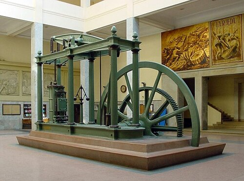
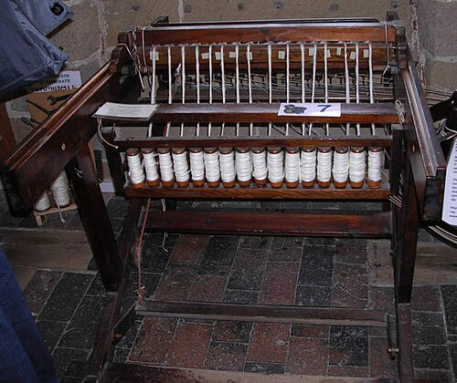
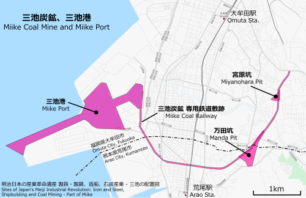
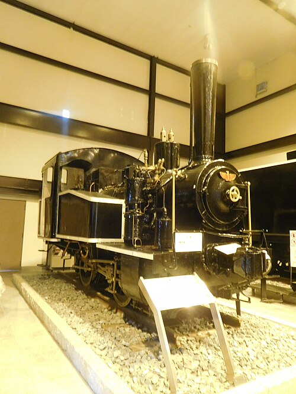
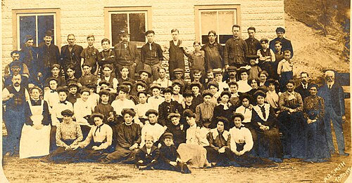
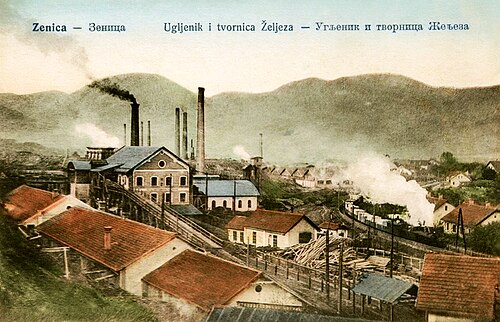
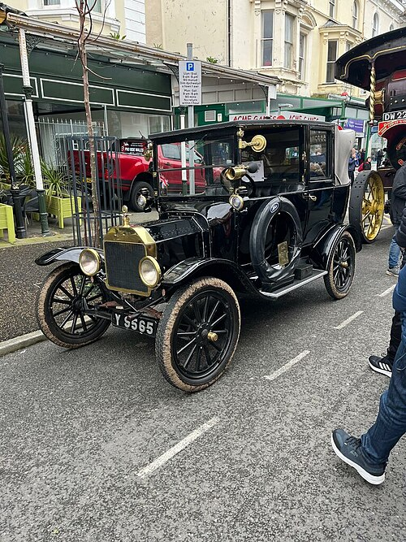
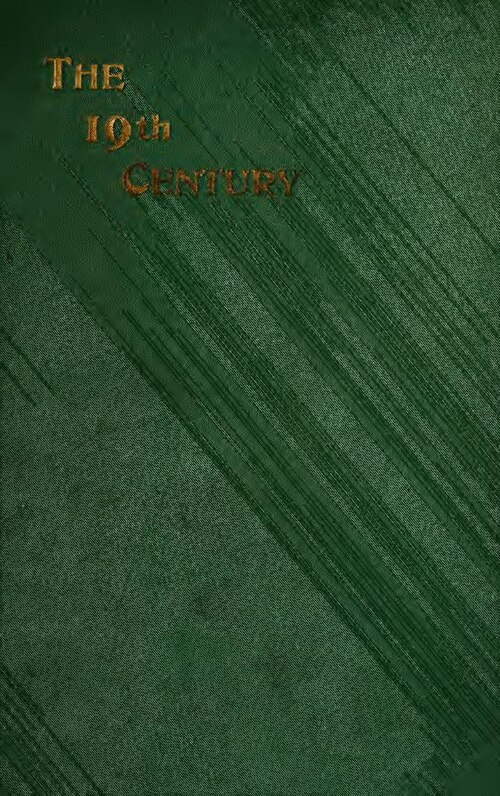
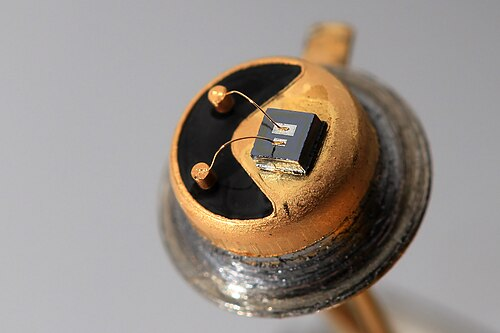
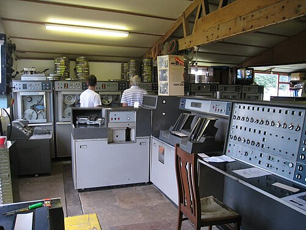
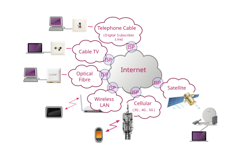
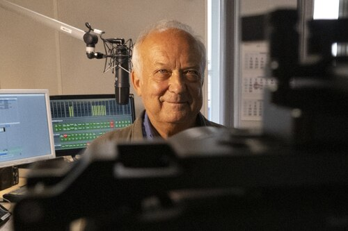
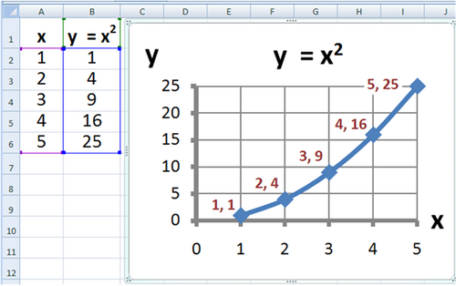
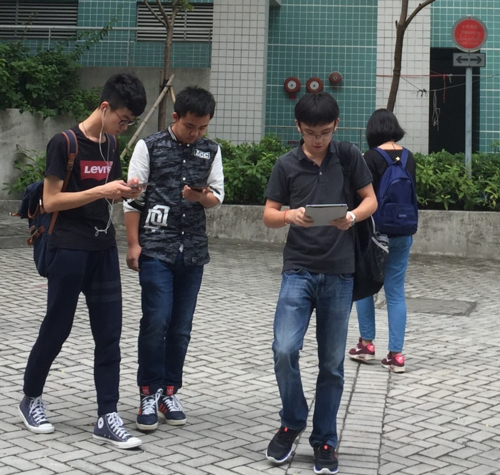
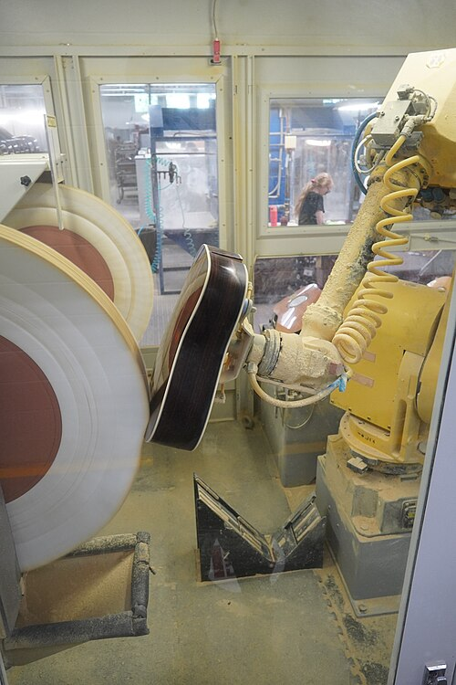
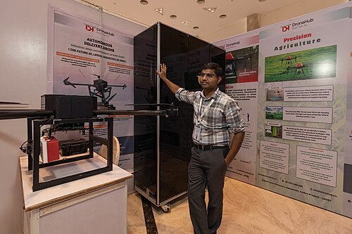
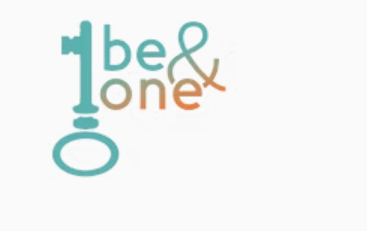
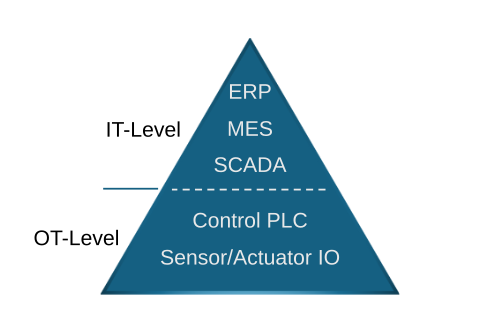
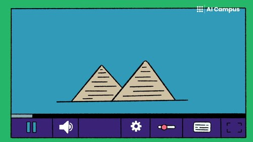
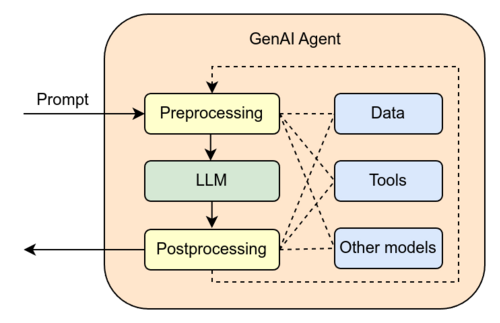
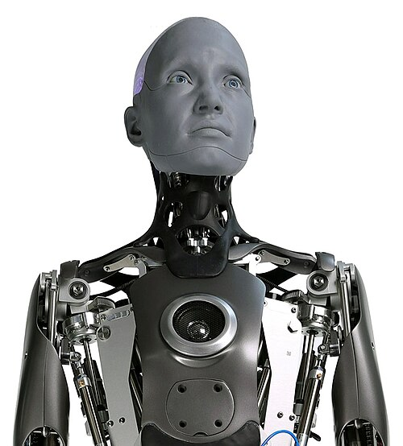
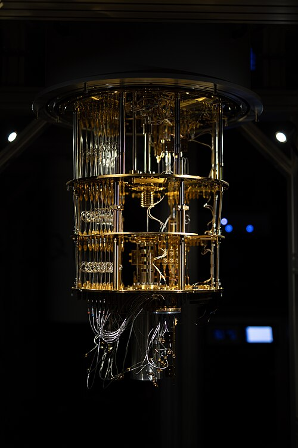

芯片、算力、云与基础模型先铺底。
挑战：工具变化快过课程更新。
机会：先建立模型理解与跨工具能力。
Agent 与工作流进入学习和行业。
挑战：只会提问，很快不再构成差异。
机会：把 AI 用进研究、创作与真实项目。
组织、服务与行业标准将被重新组合。
挑战：2033—2036 年入职时，初级任务已被改写。
机会：成为既懂专业又能驾驭 AI 流程的人。
未来十年的核心问题：不是会不会被某一个工具替代，而是能否在工具不断变化时，持续形成专业理解、判断力、表达力、协作力与项目能力。
AI 不再只是计算机系的一门选修课：它正在进入学位方向、通识课程、跨学科项目与人才培养方式。
把机器学习基础与工程、生命、城市等学科模块组合。
在计算机与符号系统培养中并行技术、人文与社会影响。
面向本科教学建立课程使用政策，并开设生成式 AI 导论等课程。
聚焦 AI 核心与 AI+交叉；部分工程培养采用大类招生，强调更宽的基础与跨学科路径。
将数智课程、交叉培养、教师发展与学习工具同时纳入改革。
以分层课程与 “X+AI” 交叉培养，把 AI 覆盖到不同学科。
对高中生的现实难题：从零散体验，走向有原理、有项目、有过程记录的学习方式。来源：MIT ↗ · Stanford ↗ · Harvard ↗ · 清华 AI 学院 ↗ · 北大 ↗ · 复旦 ↗


检索信息、答疑解惑、学习辅导
豆包 · DeepSeek · Kimi预测蛋白质结构、辅助数学证明
AlphaFold · AI for Science图像、视频、音乐、文本的生成
即梦 · 可灵 · LibTV · MiniMax智能 NPC、可交互的生成世界
《逆水寒》 · Genie 3
自主编写代码、执行办公任务
Cursor · WorkBuddy · Claude Code
无人驾驶汽车、人形机器人
Waymo · 宇树科技图：开场片画面 · 《蓝星矿脉》· AlphaFold 结构图（CC0）· Genie 3 演示 · Waymo（Grendelkhan, CC BY-SA 4.0）
检索信息、答疑解惑、学习辅导
豆包 · DeepSeek · Kimi预测蛋白质结构、辅助数学证明
AlphaFold · AI for Science图像、视频、音乐、文本的生成
即梦 · 可灵 · LibTV · MiniMax智能 NPC、可交互的生成世界
《逆水寒》 · Genie 3自主编写代码、执行办公任务
Cursor · WorkBuddy · Claude Code无人驾驶汽车、人形机器人
Waymo · 宇树科技同时涉及：智能问答（第 1 课）· 智能体与工作流（第 9 课）· 三维与生成世界（第 5 课）

从剧本、画面到配乐与剪辑，一人也能驾驭完整创作流程。
冰原上的采矿基地、苏醒的外星巨兽、战甲小队的突围。电影级的科幻场面，出自 LibTV 社区的普通创作者。


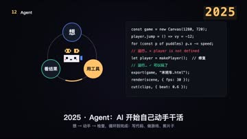


每节课：原理讲解 → 案例拉片 → 动手实践 → 作品点评 · 课上工具：Kimi / WorkBuddy · LibTV · 小云雀 · MiniMax · 剪映 · 混元 3D
 原创片尾曲自主作词，AI 编曲与演唱
原创片尾曲自主作词，AI 编曲与演唱 3D 角色模型由角色设定图生成，可打印为实体手办
3D 角色模型由角色设定图生成，可打印为实体手办 互动小游戏以短片角色为主角，自然语言编程生成
互动小游戏以短片角色为主角，自然语言编程生成 电影海报为作品设计的正式海报与封面
电影海报为作品设计的正式海报与封面